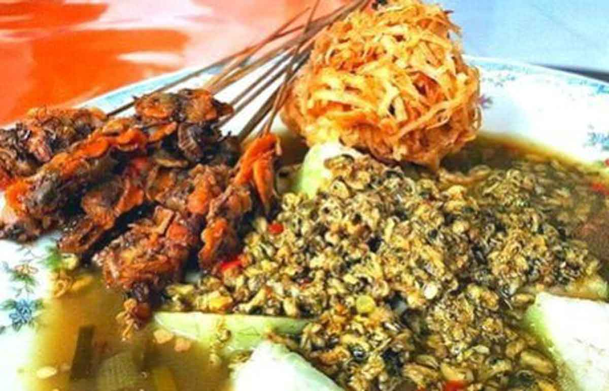

Lontong Kupang
Lontong Kupang is a traditional dish from East Java, Indonesia, particularly in Surabaya and Sidoarjo. It is made with small clams called kupang, which are cooked in a flavorful broth and served with rice cakes (lontong) and other condiments. The dish is usually accompanied by sate kerang (clam satay) and es degan (iced coconut water).
To make lontong kupang, you will need to cook the clams with ingredients such as ginger, bay leaves, kaffir lime leaves, pepper, salt, sugar, and scallions. Once the clams are cooked, they are served with lontong (rice cakes) and garnished with chili peppers and fried garlic.
Lontong kupang is a popular street food in Surabaya and Sidoarjo. It is known for its unique combination of flavors and textures. The dish is often enjoyed as a light meal or snack.